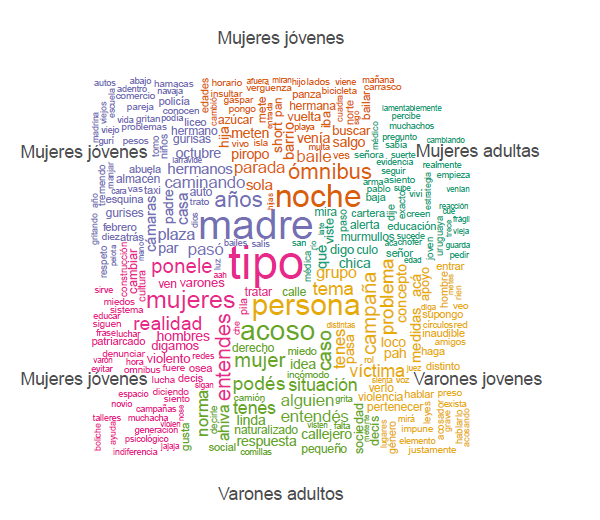
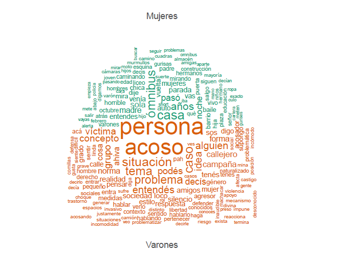

Nubes de palabras
Creo nubes de palabras con la función textplot_wordcloud y desagrego por grupos de interés.
Nubes de palabras: general

Nubes de palabras: grupos

Nubes de palabras: mujeres/varones


Parte de la presentación que hice en el cumpleaños temático de RLadies Montevideo el 30 de agosto de 2018, dónde se presentaron varias investigaciones en R sobre género. Acá están los materiales!
El siguiente es un análisis se desarrolla en el marco del estudio diagnóstico sobre el acoso sexual y otros tipos de violencia contra las mujeres y niñas en espacios públicos en Montevideo. El mismo se enmarca en un convenio suscripto entre ONU Mujeres, la Asesoría para Igualdad de Género de la Intendencia de Montevideo (IM) y la Facultad de Ciencias Sociales (UdelaR).
Representa un ejemplo de las posibilidades analíticas de tipo cualitativo que pueden hacerse desde R, utilizando los paquetes quanteda y tm.
El estudio concibe al Acoso Sexual Callejero (ASC) como:
"Incluye comentarios, atención, acciones o gestos con contenido sexual indeseado. Como en otras formas de violencia sexual, el componente clave del acoso sexual es que alguien realiza una acción sin el consentimiento, permiso o acuerdo de la persona o personas a las que se dirige. Acoso sexual incluye formas sin contacto, como comentarios sexuales acerca del cuerpo o apariencia de la persona, silbidos mientras pasa una mujer, exigencias de favores sexuales, quedarse mirando de manera sexualmente sugestiva, persecuciones y seguimiento de una persona, exposición de órganos sexuales. El acoso sexual también incluye formas físicas de contacto, como frotarse intencionalmente contra alguien en la calle o en el transporte público, agarrar, pegar una palmada y aproximarse a alguien en una manera sexual." (ONU Mujeres, 2013)
| Mujeres | Varones | Total | |
|---|---|---|---|
| Jovenes | 3 | 1 | 4 |
| Adultos | 1 | 1 | 2 |
| Total | 4 | 2 | 6 |
Creo nubes de palabras con la función textplot_wordcloud y desagrego por grupos de interés.
Se presentan dos métodos para analizar sentimiento de los documentos:
Diccionario LWIC-Spanish: con la función dfm_lookup() de quanteda identifica en los documentos las emociones presentes en el diccionario y establece puntajes para cada uno, a partir de la estandarización de los mismos (conicidencia únicamente de 15% entre términos).
Método Syuzhet: utiliza la función get_sentiment() de syuzhet asigna puntajes a cada documento según el método y lenguaje indicado. El método syuzhet es un diccionario de sentimientos desarrollado en el Laboratorio Literario de Nebraska. Otros métodos: bing, afinn, nrc y stanford.
Comparación entre los métodos: